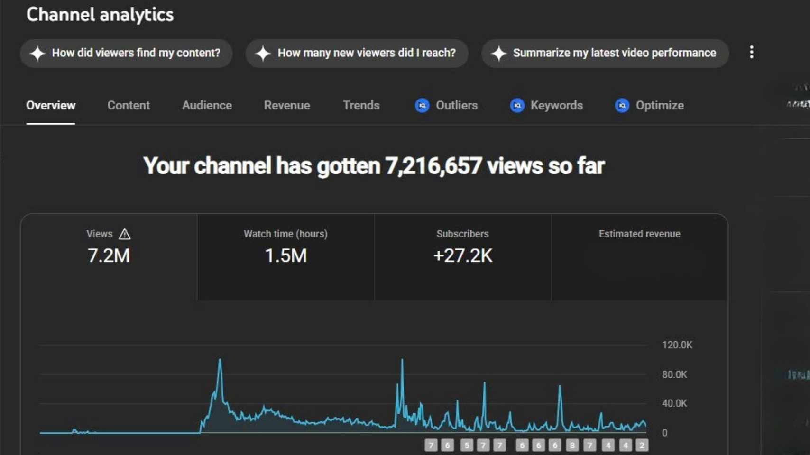
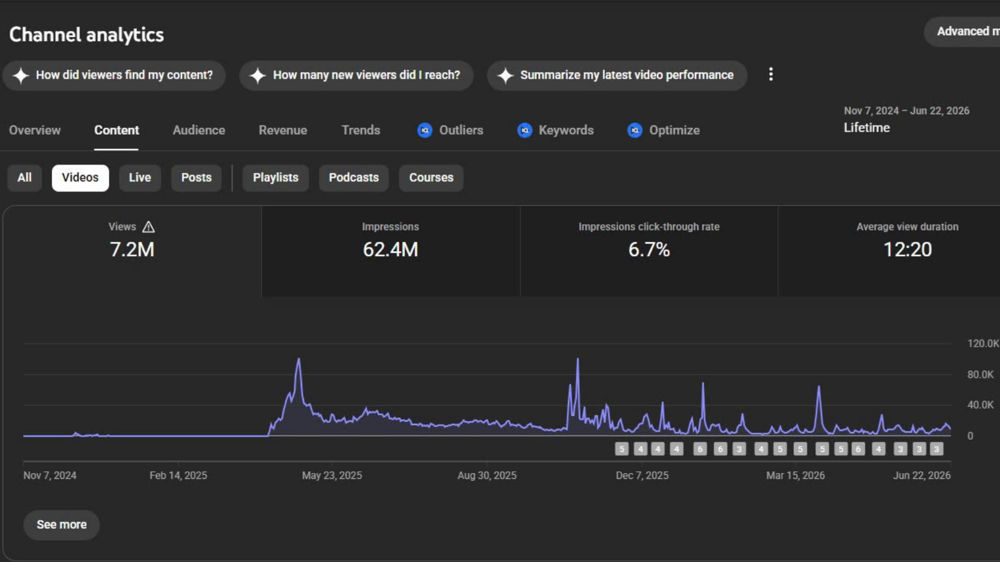
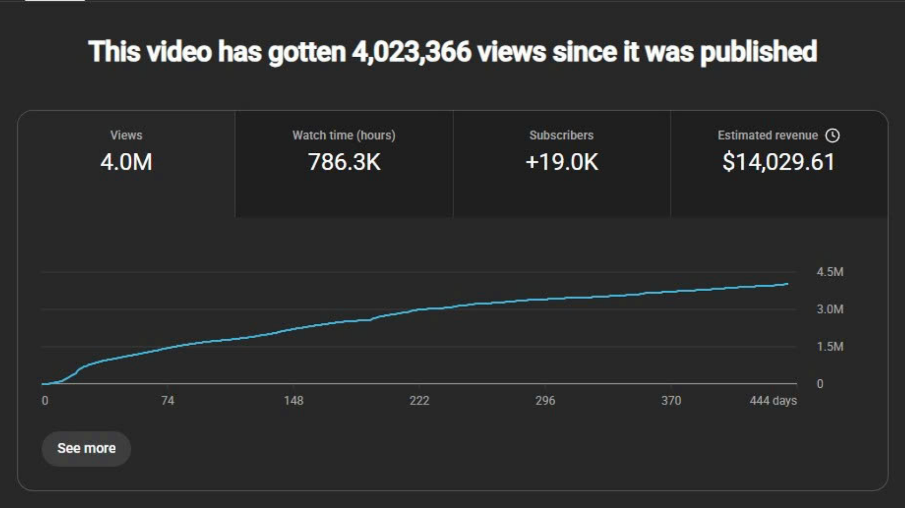

YouTube Channel Growth Strategy & Performance Analytics
In my role as a Digital Content Creator at Magic Music, I was responsible for researching, launching, and growing multiple YouTube channels from scratch.
My expertise lies in combining market research, SEO-driven content planning, and performance analytics (CTR, retention, RPM) to identify what works — and quickly course-correct when it doesn't. See the trend-response case study below for how I diagnosed and recovered a stalled channel.



AI-Powered Visual Design & Thumbnail Optimization
Across multiple YouTube channels spanning Techno and Ambient genres, I used AI tools to design and test thumbnails and videos — turning visual experiments into a repeatable formula for higher click-through.
My workflow combines AI generation (Midjourney, Runway, Luma, Google Veo 3), Photoshop retouching, and data-backed testing for colors, expressions, and styles. Winning pattern: bold character expressions, green/red tones, and art-style over real-person photos.